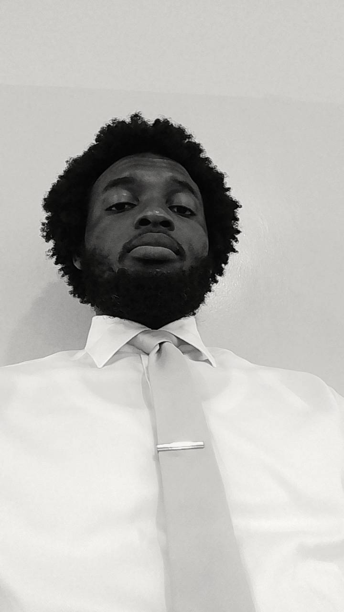

Albert Fiati | WDD 130
Hello! I am Albert Fiati, out of the sixteen regions in Ghana, I am from the Volta Region. Anloga to be precise. Let me use this opportunity to tell you a little about my hometown. The Hogbetsotso festival is a vibrant annual celebration held by the Anlo Ewe people in the Anloga city, the traditional capital of the Anlo State in Ghana's Volta Region. Celebrated during the first week of November, the festival commememorates the historic exodus form Notsie in the present-day Togo, where the Anlo people escaped the tyrannical of King Agorkoli. I hope to tell you more about myself on my next homepage.